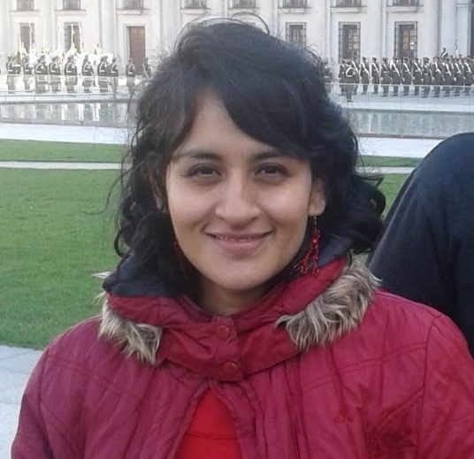

Diana Quiroga | WDD 130
Hi to every one I am Diana Quiroga from Colombia. I am married with a marvelous man from Argentina six years ago. He is a teacher and work in a famous school of the city were we live.We lived in argentina inna city called Justo Daract for 2 years but now we lived in Popayan, Colombia. We have a little girl. She is 4 years ago and she will begin her school in the next week. She is so smart and she enjoy a lot learn new things. She is amazing and we lover her a lot! Currently I am housewife and I am studying for to get a work from home. In my free time I enjoy with my family doing some recreative activities like walks.now we want to traver to Argentina to vistit to family of my husband so we have to save some money for to do it. In december 2023 we could do this travel but it was only for one month, now we want to stay for 2 or 3 months. We want to discover many cities from Argentina . Here in Colombia we want to know several cities like Medellin, San Andres, La guajira, el Quidio y eje cafetero, Pasto, Ipiales y muchas mas and we plan begin to visit it this year. For us visit the Temlple is too important so we plan to do it in march, june and december of this year.